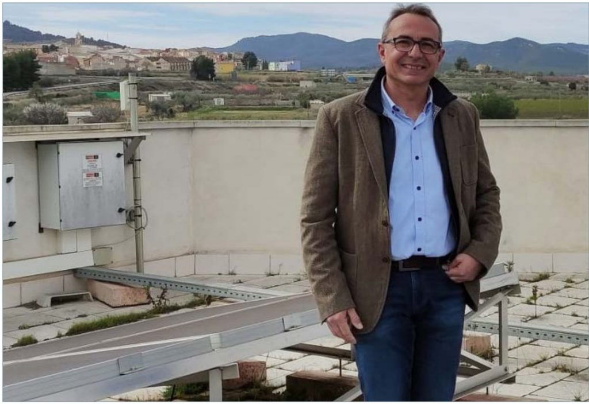
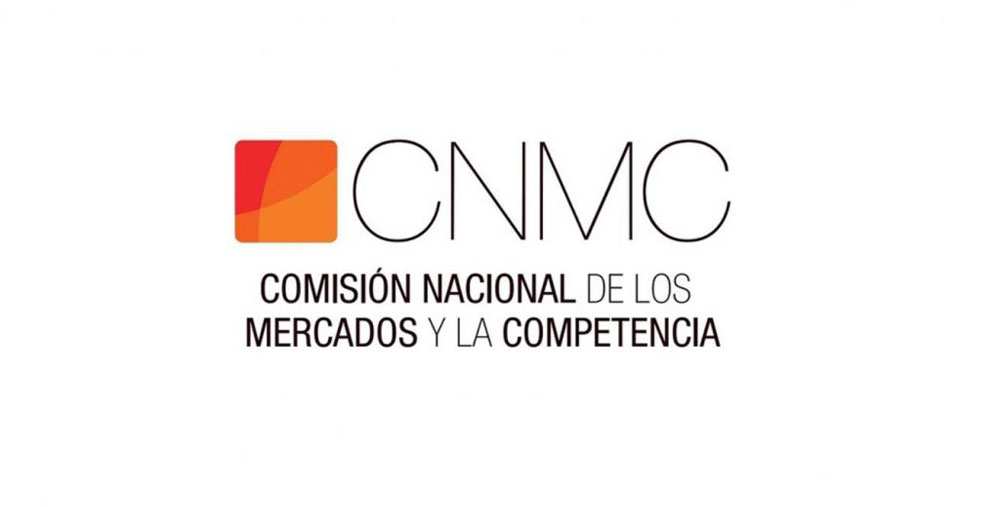
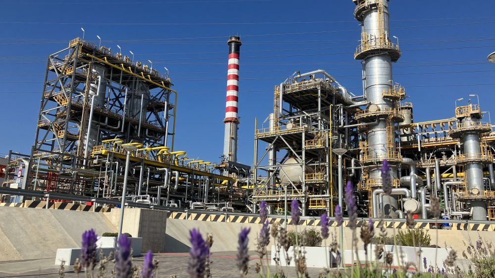

Noticias nacionales
-  Francisco Espín (AREMUR): "El gran apagón no debe hacernos abandonar el actual modelo de transición energético, sino trabajar por compensarlo"
- Teresa Ribera critica el "gatillo fácil" contra las renovables tras el apagón
-  La CNMC prevé que el autoconsumo eléctrico supere en 2025 las previsiones del Gobierno para 2030
-
 ‘Sorpasso’ histórico verde: las grandes plantas solares desbancan a la eólica y ya
son la energía con más potencia de España
‘Sorpasso’ histórico verde: las grandes plantas solares desbancan a la eólica y ya
son la energía con más potencia de España -  El Parque Energético San Roque de Moeve abre sus puertas para recibir a los ciudadanos